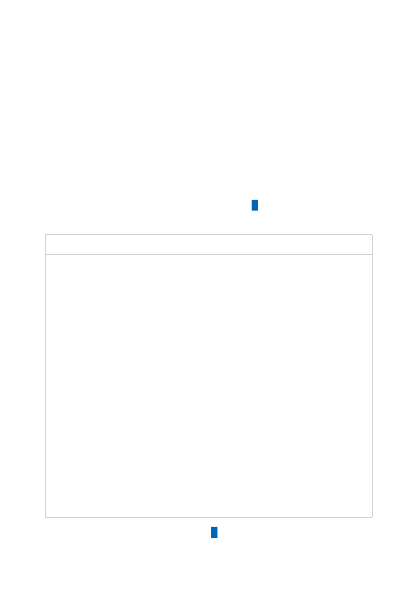

recommended to use a much lower temperature. Top_probability is another parameter
and is similar to Temperature in that it also controls the randomness of the model
response, but it does so in a different way. The general recommendation is to alter one
of these two parameters at a time, not both.
One of the most effective ways to provide reliable answers is to give the model data to
draw its responses from (grounding data). If your use case relies on up-to-date, reliable
information and is not purely a creative scenario, we strongly recommend providing
grounding data. In general, the closer you can get your source material to the final form
of the answer you want, the less work the model needs to do, which means there is less
opportunity for error. Here is an example where the system is provided a recent blog
describing the launch of GPT-4 in Azure OpenAI Service , and asked to name some of
its early customers.
System message
User
Assistant
You are an AI assistant that helps
people find information. You will
provide answers exclusively from
below text and respond in 100 words
or less:
"At Microsoft, we are constantly
discovering new ways to unleash
creativity, unlock productivity, and
uplevel skills so that more people can
benefit from using AI. This is allowing
our customers to …
… thereby reducing the likelihood that
the model will generate a harmful
response.”
Answer in 100 words or less. Use bullet
lists wherever possible.
Who are some
of the early
customers of
the Azure
OpenAI service
GPT-4 models?
Here are some of the early customers
of the Azure OpenAI service GPT-4
models:
- Epic Healthcare: They plan to use
GPT-4 to help physicians and nurses
spend less time on data entry and
investigation.
- Coursera: They are using Azure
OpenAI Service with GPT-4 to create a
new AI-powered learning experience
on their platform.
- Coca-Cola: They are using Azure
OpenAI to build a knowledge hub and
plan to leverage GPT-4's multimodal
capabilities for marketing, advertising,
public relations, and customer
relations.
- Other companies of all sizes are
using Azure AI to improve customer
experiences, summarize long-form
content, help write software, and
reduce risk by predicting the right tax
data.
Text from Azure OpenAI GPT-4 launch blog .
Provide grounding context
1
1